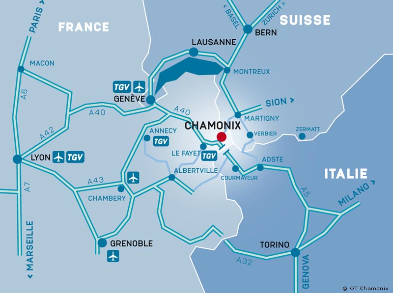

Travelling to Chamonix
From International Airports
Chamonix Mont-Blanc is situated at 88km from Geneva-Cointrin International airport; 220km from Lyon-St-Exupery Intenational airport and 171 km from Turin-Caselle International airport.
Daily public transport services
- Geneva airport throught the bus SAT company
- Turin airport through the bus SAVDA company
- Lyon airport by train
Shuttles dedicated to the conference
Some shuttles will be organized from/to Geneva airport to the hotels we selected. The related information will be available soon through the same website as for the hotel reservation.
Public Shuttles & Cabs
More shuttle transfer options can be found here.
Note that cab transfer from the airport to Chamonix can be quite expensive at night. (~240€ for night rate after 6:30pm).
Access by road
- Direct access via the "Autoroute Blanche" E25-A40 linked with the European motorway network.
- 16 km from Switzerland via the Col des Montets
- 15 km from Italy via the Mont-Blanc Tunnel
Getting to your hotel
Town mapVISA & Travel Documents:
You can check the official Do I need a VISA webpage for visa information.
For short stay of less than 90 days, a Visa is not required for:
- Citizens of the following countries: Andorra, Argentina, Australia, Bermuda, Brazil, Brunei, Canada, Chile, Costa Rica, Croatia, El Salvador, Guatemala, Holy See, Honduras, Israel, Japan, Malaysia, Mexico, Monaco, Nicaragua, New Zealand, Panama, Paraguay, San Marino, Singapore, South Korea, United States, Uruguay, Venezuela
- Holders of passports from the Hong Kong Special Administrative Region of the People's Republic of China and the Special Administrative Region of Macao of the People's Republic of China
- Holders of a valid residence document in France
- Holders of a residence document issued by a country which adheres to the Schengen Agreement
- Holders of a travel document issued by a country which adheres to the Schengen Agreement.
French VISA and Switzerland
Schengen VISA
By requesting a French VISA at the French Embassy, you will be granted a Schengen VISA which allow you to enter Switzerland as well, granting access to both the french sector and the switzerland sector of the airport.If you do not require a visa to enter France, you should neither need one to access switzerland.
From your flight
- On leaving the plane, follow the usual route for passengers.
- Collect your bags from the main baggage conveyor.
- Go through Swiss customs.
- Then, to take bus, shuttle or train as shown on this page, follow the Switzerland exit directions
France-only VISA
In the unlikely case you have gbeen ranted access only to France but not Switzerland (for non Schengen VISA),
the Geneva airport has a French sector that allows you to rent a car or take a cab in France without entering
Switzerland at all.
More information about the French Sector can be found
here.
You will also get some help and directions at the "Accueil France" desk of the airport.
Letter of Invitation
If you need a letter of invitation, please send a request to Danièle Herzog.
* Most of the documentation and maps from this webpage comes from the www.chamonix.com website from the Office de Tourisme de Chamonix.